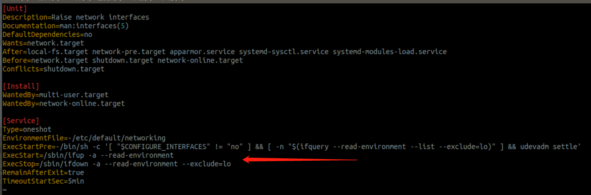

linux网络操作
关于 linux 的一些网络操作。
下面是几个常用的命令来查看网络信息
1 | ifconfig # 查看网卡 |
关于Ubuntu桌面版进行网络配置的注意事项:
- 因为是桌面版，所以增加了network-manager来执行可视化的网络管理（就是在桌面UI中管理网络配置），配置文件是那个
/etc/NetworkManager/NetworkManager.conf，操作服务是service network-manager restart； - 同时在命令行中依旧存在着管理网络的方式，配置文件是
/etc/network/interfaces，操作服务是service networking retart。 - 所以说，如果两个类型的网络管理服务出现了冲突，那么Ubuntu采用的处理方式是，以network-manager的配置为准，在network-manager一直负责网络配置的过程中，修改
/etc/network/interfaces是没有意义的，所以如果想使用/etc/network/interfaces的配置，就需要让network-manager摆脱对网络配置的管理（直接stop掉network-manager，或者修改network-manager的配置文件managed子项为false，在下面有详细命令）。
以下是对网络进行配置的相关操作（适用于ubuntu 16，ubuntu 18）
1 | /etc/NetworkManager/NetworkManager.conf # network-manager服务的配置文件，修改managed子项，从true改为false，可以关闭网络桌面管理工具对网络配置管理 |
刷新ip地址的时候必须要注意，修改网络配置文件之后或者恢复network-manager接管必须执行这个，否则不会生效，需要重启才能使修改后的网络配置文件生效。
查看一下networking.service的源码，可以发现本质上networking命令就是调用了if up/down 网卡名。
